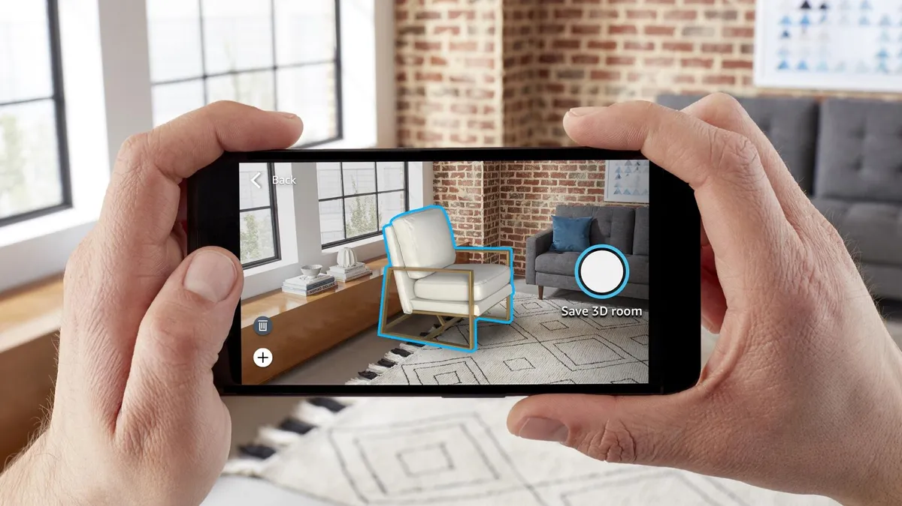

Since about 2016 with the release of the Oculus Rift VR and AR Technology have been a hot industry that many developers have kept watch on. However, despite the many innovations that have come to VR and AR since the release of the quest almost all VR and AR headsets have culturally died off within a few years of the beginning of their lifespans. So, is the development of VR and AR applications even worth it if the hardware is not yet impressive enough? Below is an analysis of the different uses of VR and AR in the modern day to determine if software development is feasible.
Medicine may be the most useful field for VR and AR to exist in in the modern day. Even the most basic of Virtual Reality has found a use in the medical field by acting as a non-pharmaceutical pain killer for women in labor. Augmented reality software also has found a place in the operating room. It has been found that doctors can increase their efficiency when equipped with an Augmented Reality device to quickly access information about the patient or the operation that they are doing. Augmented reality has also been found to be able to assist directly in operations by displaying information about how the doctor should position their tools or detect tumors in the patient.

Virtual and Augmented reality dont currently have a huge place in the buisness world. However, it has been shown that there is a niche for VR and AR to come in to fill for businesses. For example, a reality business could commission software developers to create an AR or VR application which would allow for customers to view a virtual model of a house or to place virtual furniture into a real house. Another potential use case for AR in the work force is in labour intensive training. It has been found that when paired with augmneted reality technology to aid in training employees the employees were overall better trained in their assembly tasks.
Short paragraph
Conclusion